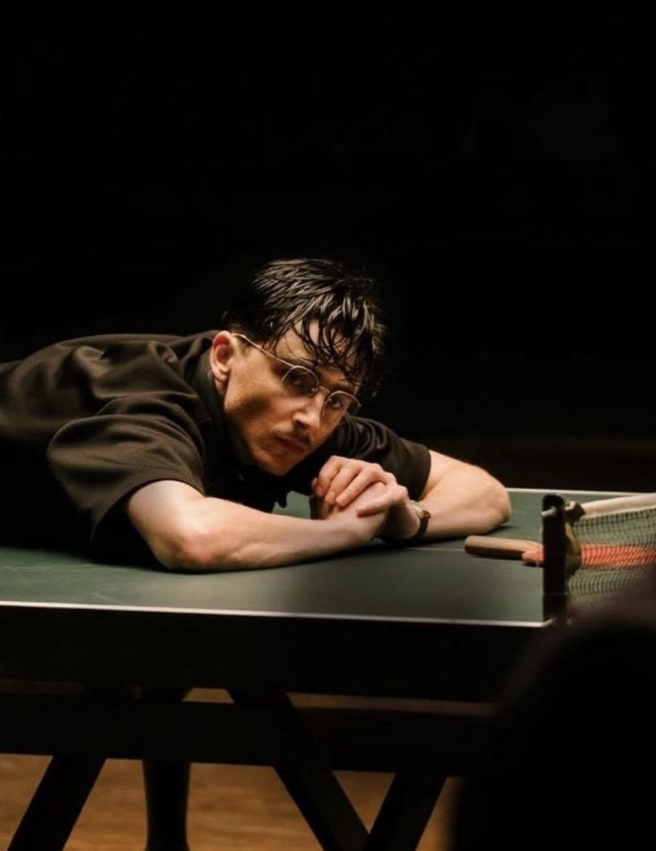

|
MARTY SUPREME Directed by Josh Safdie and produced by A24, Marty Supreme marks a significant departure from Chalamet’s previous work. The film is a fictionalized account inspired by the life of Marty Reisman, a professional ping-pong player and 1950s counter-culture icon. Set against the backdrop of mid-century New York, the narrative explores the world of professional table tennis, a niche subculture that Reisman helped bring into the mainstream through his technical skill and showmanship. TECHNICAL PREPARATION AND AESTHETICS To portray a world-class athlete, Chalamet underwent rigorous training to master the specific "hardbat" style of play used during the era. The production emphasizes a distinct period aesthetic, utilizing 1950s cinematography and costume design to ground the story in its historical context. Chalamet’s physical transformation for the role—including period-accurate styling and props—reflects a commitment to capturing the eccentric energy and focus required of a professional player in a high-stakes environment. COLLABORATION AND CASTING The film is notable for its unique ensemble cast, featuring diverse talents like Gwyneth Paltrow and Tyler, the Creator. This project represents Chalamet's first collaboration with the Safdie brothers' filmmaking orbit, known for high-intensity storytelling and gritty, character-driven narratives. The production focuses on the psychological toll of professional competition and the unique pressures of being a niche celebrity in an era of rapidly changing social norms. EVOULUTION OF DRAMATIC CHANGE Marty Supreme serves as a bridge between Chalamet’s blockbuster success and his return to character-focused, auteur-driven cinema. By taking on the role of a sports icon with a complex personal history, he continues to expand his portfolio beyond traditional leading-man archetypes. The role challenges him to balance athletic physicality with the nuanced internal life of a man obsessed with a singular craft, further solidifying his reputation for selecting unconventional and demanding projects. |
 |